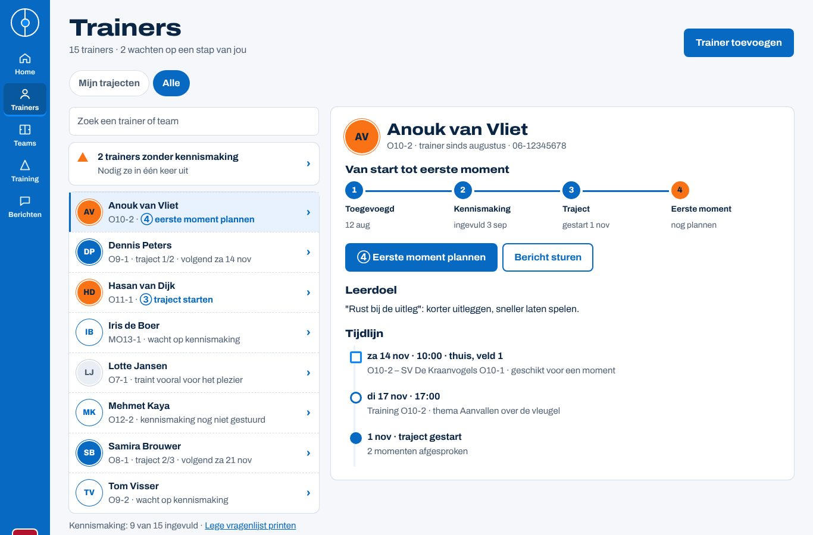
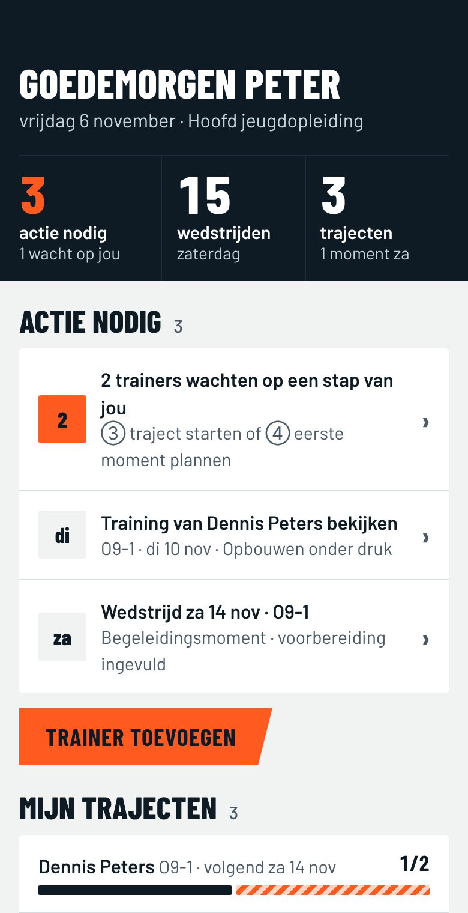
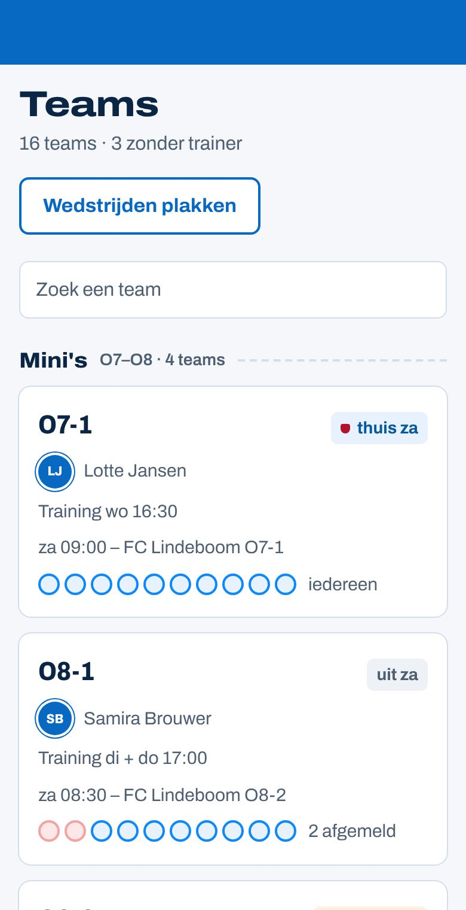
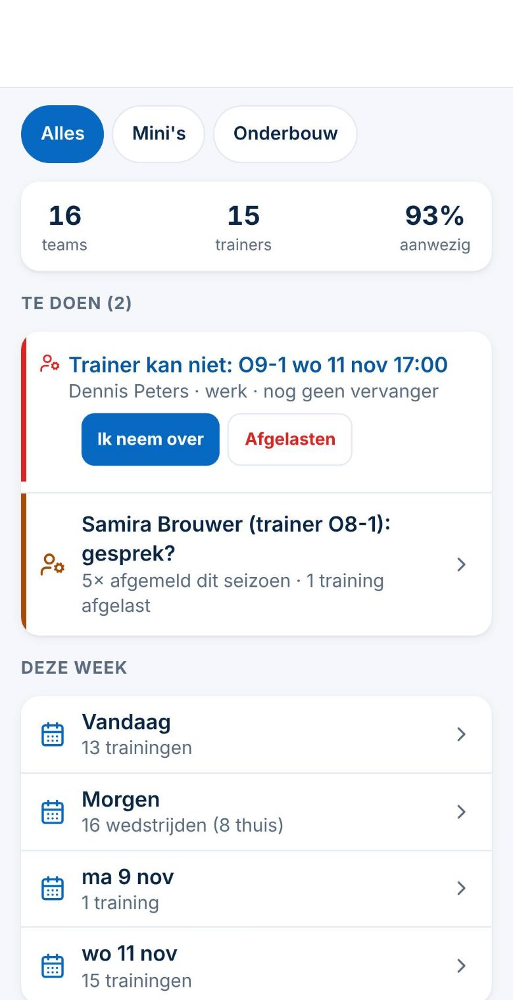
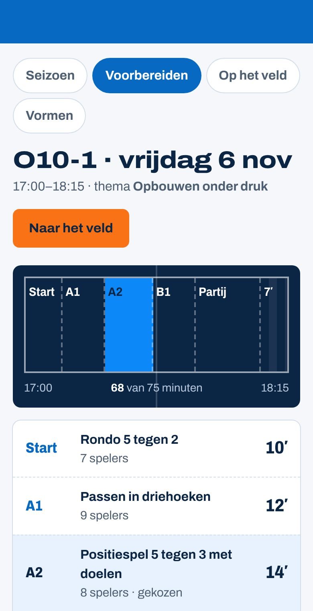
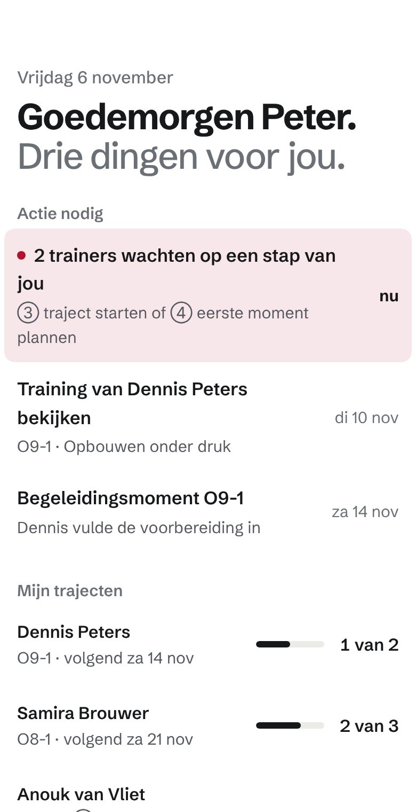
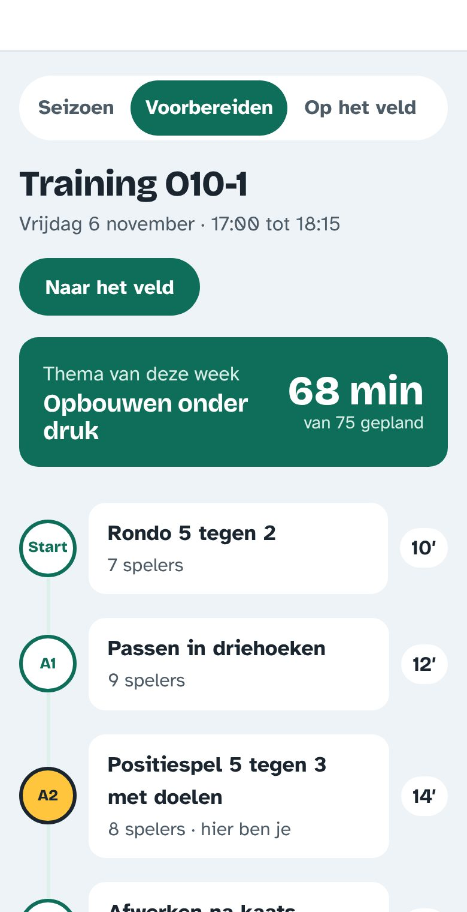
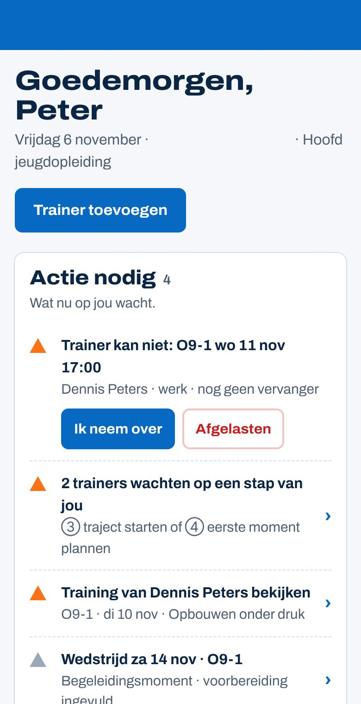
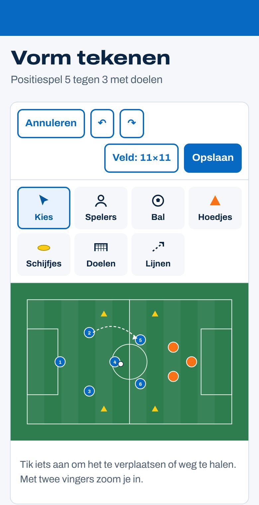

Herkent iemand ClubComm zonder logo?
Herkenningstest voor de merkrichting Krijtbord in ClubComm-blauw (onderzoek Spoor 3). Alle namen, clubs en tegenstanders zijn verzonnen; ook de tegels van "andere apps" zijn eigen ontwerpen, geen echte producten.
Zo doe je de test (5 minuten per persoon)
- Kies drie mensen die het nieuwe ontwerp nog niet kennen, liefst één beginnende oudertrainer, één ervaren breedtetrainer en één selectietrainer of HJO.
- Voorbeeld (10 seconden): laat het scherm hieronder zien en zeg: "Dit is ClubComm." Daarna weg.
- Ronde 1, wazig (30 seconden): laat de acht tegels wazig zien. Vraag: "Welke schermen zijn van dezelfde app als het voorbeeld?" Laat ze de nummers noemen en zeggen hoe zeker ze zijn (1 = gok, 3 = zeker).
- Ronde 2, scherp: zet de tegels op Scherp. Vraag opnieuw welke het zijn, en: "Waaraan herken je het?"
- Schrijf de antwoorden op het formulier. Geen namen nodig; noteer alleen het soort gebruiker.
Op een telefoon of laptop laten zien werkt het best. Printen kan ook; de tegels worden dan scherp geprint, dus doe ronde 1 op het scherm.
Voorbeeld: dit is ClubComm

De acht tegels
Logo, appnaam en clubnaam zijn weggehaald. Alle tegels tonen dezelfde soort inhoud, zodat alleen de vormgeving verschilt.








Antwoordformulier
| Persoon | Soort gebruiker | Ronde 1 (wazig): nummers + zekerheid 1–3 | Ronde 2 (scherp): nummers | Waaraan herkend? (letterlijk opschrijven) |
|---|---|---|---|---|
| 1 | oudertrainer / breedte / selectie-HJO | |||
| 2 | oudertrainer / breedte / selectie-HJO | |||
| 3 | oudertrainer / breedte / selectie-HJO |
Antwoordsleutel en beoordeling (pas openen na de test)
| Tegel | Wat het is | Telt als |
|---|---|---|
| 1 | Richting A · Matchday, Home | andere app |
| 2 | ClubComm Krijtbord-blauw, Teams | ClubComm |
| 3 | De huidige ClubComm (Home HJO) | huidige stijl: laat zien of het blauw alleen genoeg is om te verwarren |
| 4 | ClubComm Krijtbord-blauw, Training | ClubComm |
| 5 | Richting D · Clubhuis, Home | andere app |
| 6 | Richting B · Leerlijn, Training | andere app |
| 7 | ClubComm Krijtbord-blauw, Home HJO | ClubComm |
| 8 | ClubComm Krijtbord-blauw, Tekentool | ClubComm |
Wanneer is de identiteit herkenbaar genoeg?
- Geslaagd: minstens 2 van de 3 mensen vinden in ronde 1 (wazig) minstens 3 van de 4 ClubComm-tegels (2, 4, 7, 8), en kiezen hooguit één andere tegel.
- Tegel 3 gekozen (de huidige app)? Dan herkennen mensen vooral het blauw, niet de vormen. De rondjes, pionnen en looplijnen moeten dan sterker.
- Tegel 8 gemist (tekentool)? Dan valt het groene veld buiten de identiteit; overweeg het blauwe menu of de rondjes daar duidelijker te maken.
- "Waaraan herkend?" Tel hoe vaak genoemd wordt: rondjes met letters, pionnen/driehoekjes, stippellijnen, de letter, blauw. Het merk is sterk als vormen vaker genoemd worden dan kleur.
- Drie mensen is een eerste indruk, geen bewijs. Bij twijfel herhalen met drie anderen.